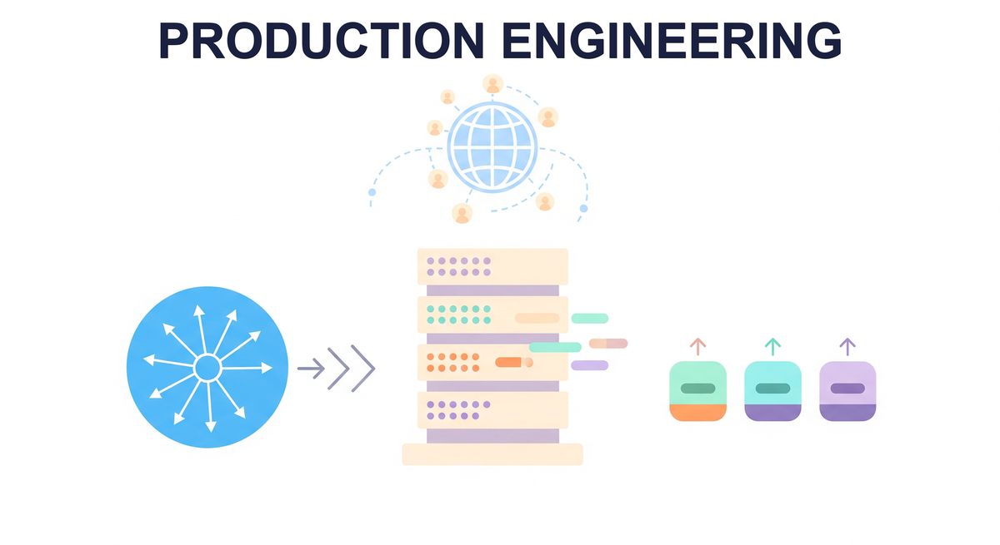

"A demo that works on your laptop is a prototype. A system that works at 3 AM on Black Friday with ten times the expected traffic is production."
Deploy, Battle-Tested AI Agent

Eval (Chapter 34) tells you what's working. This chapter is everything else about running an LLM in production: application architecture, deployment, frontends, scaling, guardrails, LLMOps, AI gateways, workflow orchestration, edge deployment, reliability engineering, and Kubernetes-native LLM operations. The patterns here are why a customer-facing AI feature stays up for years, not weeks.
Chapter Overview
Moving an LLM prototype from a Jupyter notebook to a production system introduces an entirely new category of engineering challenges. Latency, scalability, reliability, and operational excellence all demand attention long before launch. A model that performs perfectly on a benchmark can still fail catastrophically in production if its deployment architecture cannot handle traffic spikes or if there is no infrastructure for versioning, testing, and improving prompts at scale. The evaluation and observability practices from Chapter 34 provide the foundation, but production readiness demands much more.
This chapter covers the production engineering lifecycle for LLM applications. It begins with deployment architecture (FastAPI, LitServe, Docker, cloud services) and frontend frameworks (Gradio, Streamlit, Chainlit). It then addresses scaling and inference optimization techniques (Chapter 09), along with production guardrails (NeMo Guardrails, Llama Guard, ShieldGemma). The operational layer follows with LLMOps practices including prompt versioning, A/B testing, feedback loops, and data flywheels. The chapter also covers AI gateways and model routing (LiteLLM, Portkey), workflow orchestration with durable execution (Temporal, Inngest), edge and on-device deployment, reliability engineering patterns, and Kubernetes-native LLM operations.
Safety, ethics, regulation, and governance topics continue in Chapter 37: Safety, Ethics, and Regulation, while strategic and business considerations are covered in Chapter 31: LLM Strategy, Product Management and ROI.
Taking an LLM prototype to production involves infrastructure decisions, scaling strategies, and reliability patterns that go beyond model quality. This chapter covers deployment architectures, caching, load balancing, and CI/CD for LLM systems, bringing together techniques from across the book into production-ready implementations.
Learning Objectives
- Design and deploy LLM applications using FastAPI, LitServe, Docker Compose, and major cloud platforms (AWS, GCP, Azure)
- Build interactive frontends with Gradio, Streamlit, Chainlit, and the Vercel AI SDK
- Implement production guardrails using NeMo Guardrails, Llama Guard, and content safety classifiers
- Establish LLMOps workflows with prompt versioning, A/B testing, online evaluation, and data flywheels
- Configure AI gateways with LiteLLM and Portkey for semantic routing, fallback chains, and multi-provider load balancing
- Implement durable execution for long-running LLM workflows using Temporal, Inngest, and checkpointing patterns
- Deploy LLMs on edge and mobile devices using llama.cpp, Ollama, MLX, and GGUF quantization
- Apply reliability engineering patterns (circuit breakers, semantic SLOs, chaos engineering) to LLM applications
- Operate LLM workloads on Kubernetes with GPU scheduling (Kueue, Volcano), KServe, and autoscaling
Prerequisites
- Chapter 13: LLM APIs (chat completions, message formatting, model parameters)
- Chapter 14: Prompt Engineering (prompt design, structured outputs, chain-of-thought)
- Chapter 23: Retrieval-Augmented Generation (RAG pipelines, vector stores)
- Chapter 34: Evaluation and Observability (metrics, tracing, monitoring)
- Familiarity with Python web frameworks, Docker, and cloud deployment basics
Sections
- 29.1 Application Architecture & Deployment FastAPI, LitServe, streaming (SSE, WebSockets), Docker Compose, AWS Bedrock/SageMaker, GCP Vertex AI, Azure OpenAI, and serverless platforms (Modal, Replicate, HF Inference Endpoints).
- 29.2 Frontend & User Interfaces Gradio, Streamlit, Chainlit, Open WebUI, and the Vercel AI SDK for building interactive chat interfaces and LLM application frontends with Next.js.
- 29.3 Scaling, Performance & Production Guardrails Latency optimization (building on Chapter 09), rate limiting, queuing, backpressure, auto-scaling, NeMo Guardrails, Guardrails AI, Lakera, Llama Guard 3/4, Prompt Guard, and ShieldGemma.
- 29.4 LLMOps & Continuous Improvement Prompt versioning, A/B testing, online evaluation, feedback loops, data flywheels, model registries, and continuous improvement pipelines for LLM applications.
- 29.5 AI Gateways and Model Routing LiteLLM, Portkey, API gateway patterns, semantic routing, cost-based model selection, fallback chains, and multi-provider load balancing.
- 29.6 Workflow Orchestration and Durable Execution Temporal, Inngest, durable execution patterns for long-running LLM workflows, retry policies, checkpointing, and orchestrating multi-step agent pipelines.
- 29.7 Edge and On-Device LLM Deployment llama.cpp, Ollama, MLX, ExecuTorch, GGUF quantization trade-offs (Q4_K_M vs Q5_K_M vs Q8_0), mobile battery and thermal constraints, and tiered cloud/edge architectures.
- 29.8 Reliability Engineering for LLM Applications Failure taxonomies, fallback chains, circuit breakers, semantic SLOs, chaos engineering for LLM systems, and resilience patterns.
- 29.9 Kubernetes-Native LLM Operations GPU scheduling with Kueue and Volcano, Kubeflow PyTorchJob for distributed training, KServe with vLLM/TGI runtimes, MIG partitioning, autoscaling with custom LLM metrics.
What's Next?
In the next part, Part IX: Safety and Strategy, we address the safety, ethics, regulatory, and strategic considerations that govern responsible AI deployment.